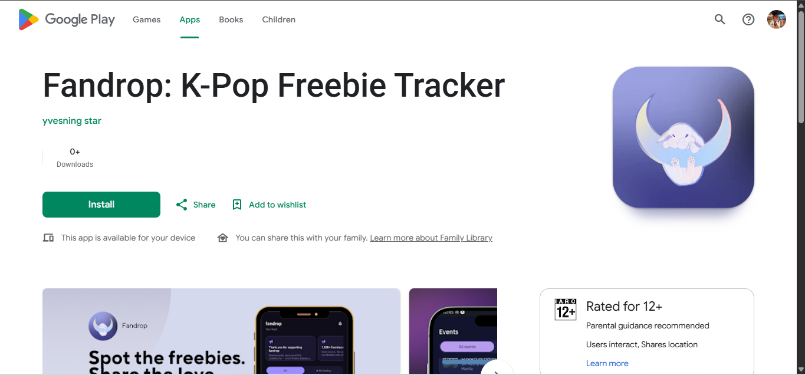
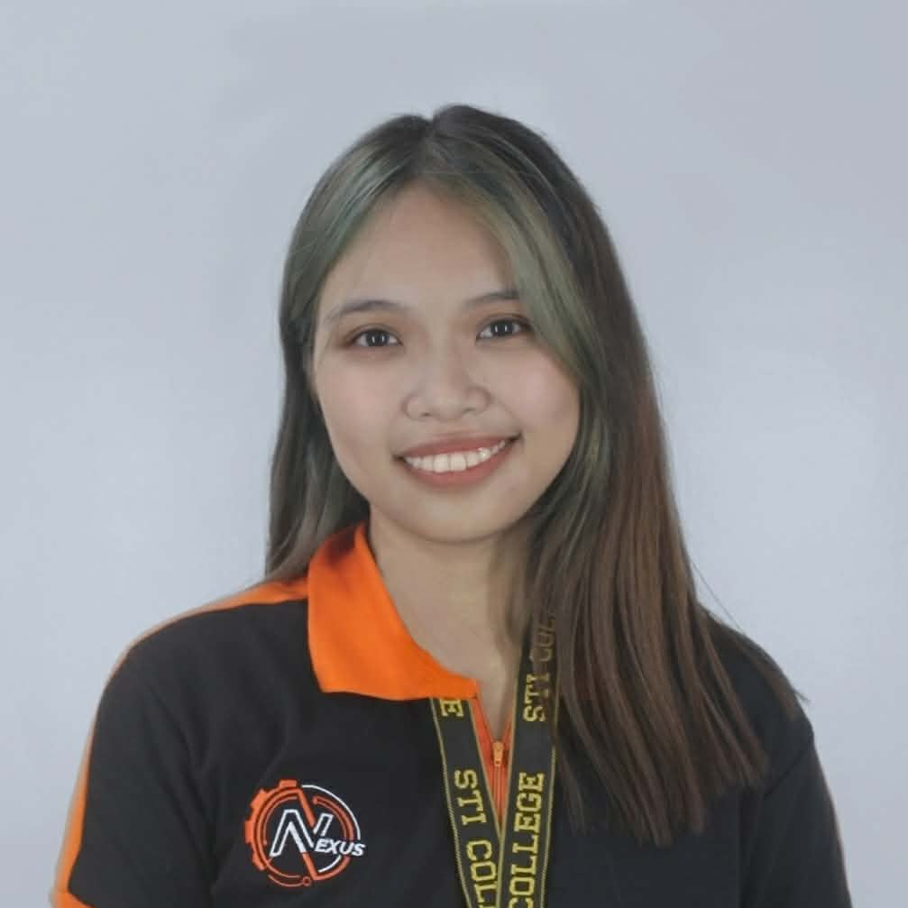
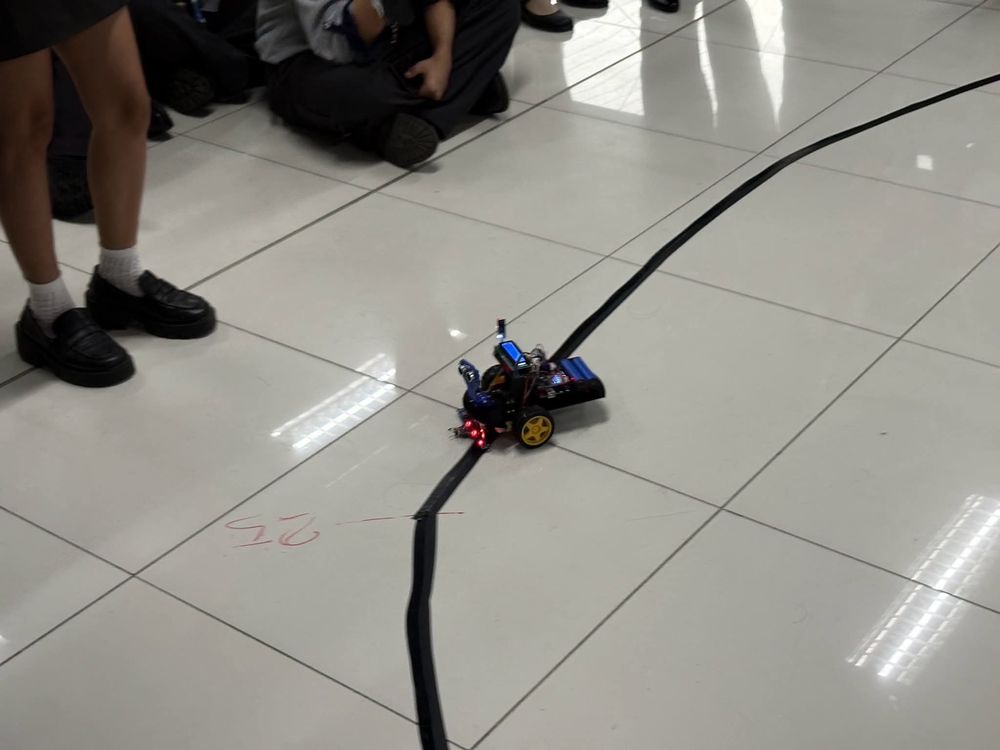
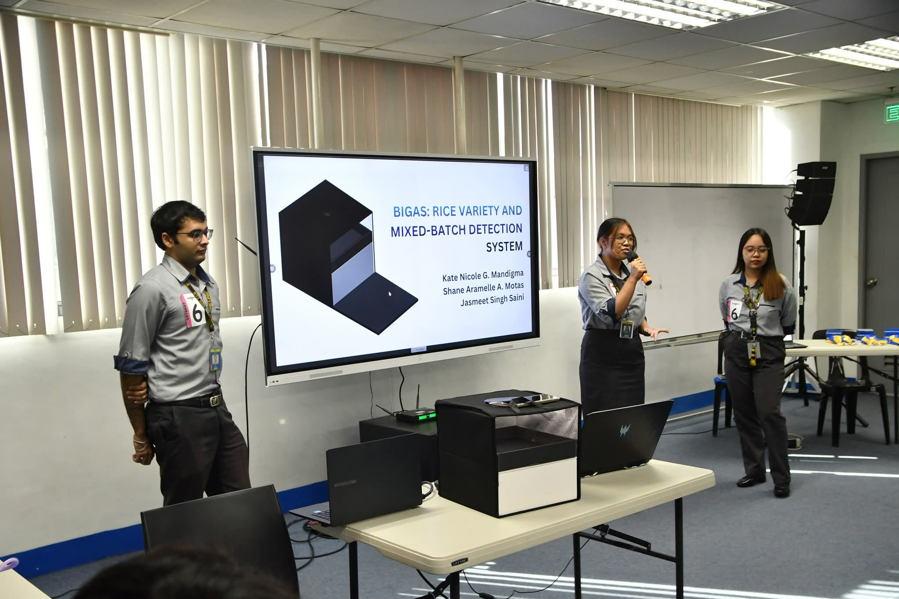

Fandrop: K-Pop Freebie Tracker
Personal project · 2026
An android mobile application that helps K-Pop fans track freebie giveaways and events, currently in its closed testing phase.

KNBS in Computer Engineering
STI College Calamba, 4th Year
Hi, I’m Kate, a 4th year Computer Engineering student at STI College Calamba. I’m interested in how hardware and software work together, and I enjoy figuring out how things work and how to make them work better.
I like to indulge my own niche interests and bring them into everything I build. Starting from something I truly care about keeps me curious and motivated, and it makes the work feel like mine. Some of the best things I’ve learned came from following an interest that most people wouldn’t think to connect to engineering.
I’m still learning and I like it that way. I enjoy picking up new tools, asking questions and trying things out until they work.
I’m looking for internship or entry-level opportunities where I can learn from a team, take on real work and grow as an engineer.
Currently learning: JavaScript, HTML, CSS

Personal project · 2026
An android mobile application that helps K-Pop fans track freebie giveaways and events, currently in its closed testing phase.

Course Project · 2026
A robot designed to follow a line on the ground, utilizing sensors and microcontrollers for navigation.

Capstone Project · 2026
Together with my groupmates, we developed a device to identify different rice varieties and detect mixed batches using image processing techniques and microcontroller-based hardware. I'm involved in the planning, design, documentation, and physical implementation phases as the thesis group leader.
Want to work together or just say hi? Email me at mandigmakate1125@gmail.com.